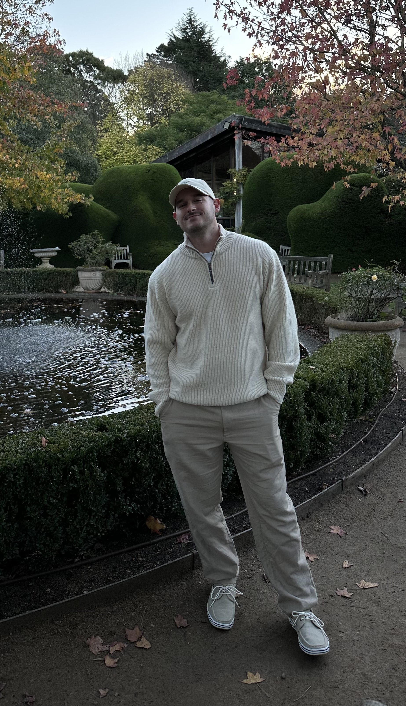

About Mitch
34 year old software engineer from the United States who moved to Melbourne in 2025.

34 year old software engineer from the United States who moved to Melbourne in 2025.
My Story
In 2010 after high school I did not know what I wanted to do in life, so I ended up joining the US Army.
I learned a lot about myself during that time and decided to separate in 2014, where I went on to get my
Associates Degree (General Studies). After working a series of different jobs, I figured out what I finally wanted to do in life - become a software developer.
I started this journey by learning the fundamentals of object oriented programming in Java at home.
As I began to feel more comfortable with Java I wasn't sure where to go next.
This led me to attend a software development bootcamp offered by the University of South Florida.
After graduating I moved to Orlando in search of new opportunities, where
I found my first development role at Seminole County Public Schools as a full stack Software Developer.
Here I was able to take the skills I had learned and begin applying them to a production environment.
From there I moved onto Measurement Incorporated as a Programmer/Analyst where I maintained, tested, and developed features for the state of Michigan's standardized testing workflow web application.
Working at MI gave me a taste of what it is like to work in an enterprise development team and I loved it.
In January 2025 I decided to make a big change and go back to school, but this time in Melbourne, Australia.
I'm currently attending Torrens University to obtain a Bachelor Degree (Software Engineering AI), where I'm expanding my skillset by learning about
microservices architecture, data mining, data visualization, classification, regression, natural language processing, computer vision, and deep learning.
I currently maintain a distinction average and my anticipated graduation date is in August 2027.
I'm currently on a subclass 500 (student visa) and have submitted a sublcass 820 (partner) visa.
I will looking for a full time position in Melbourne or Sydney in 2027 (or an internship for my final semester with the right big tech company).